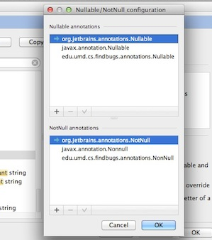

Intellij的NEP注解－疯狂的Java
我们经常在开源项目里看到这样的注解，朦胧知道可能是处理 NullPointerException的。但具体含义是什么呢？
import org.jetbrains.annotations.NotNull;
import org.jetbrains.annotations.Nullable;
@Nullable
public balabala(){
// codz here
}
JetBrains的官方解释「在这里」。
粗略看了一遍很容易理解，用来明确控制针，抑制大量的NPE异常。当我亲自试验 的时候问题出现了。由于上面的链接内提到：
These annotations are proprietary ones and included in the bundled JAR. We at JetBrains suggested to include these annotations in the standard Java SDK. The issue is still pending.
想来历史也够久远了，所以可能jdk已经引入了呢。于是我没有下载JB的包，直接 自动import了一下，出现这货：com.sun.istack.internal.Nullable，看起来像 是亲儿子吧？一跑，Intellij不认。
怪哉，搜索一下吧。傻眼了：
javax.validation.constraints.NotNull Created for runtime validation, not static analysis. edu.umd.cs.findbugs.annotations.NonNull Used by Findbugs static analysis and therefore Sonar javax.annotation.Nonnull This might work with Findbugs too, but JSR-305 is inactive. com.intellij.annotations.NotNull Used by IntelliJ IDEA IDE for static analysis. lombok.NonNull Used to control code generation in Project Lombok. Placeholder annotation since there is no standard.
心想几个注解而已。你们至于么？？？
搜了一下Intellij的配置菜单，居然这货支持起来也有亲疏，一共俩注解，还分 门别类设置呢。失语。

图1 Intellij界面
看到sof上一个大哥的评论，颇喜感：
apache should invent a "common" annotation and a tool that can convert it to any other annotation. the solution to the problem of too many standards is to invent a new standard. – irreputable Feb 11 '11 at 0:15
什么样文化才会催生这样的环境？要求自己的上(码)帝(奴)，在这么小的狗屁习 惯上站队？
上帝欲使Java灭亡，必先使其社区疯狂。